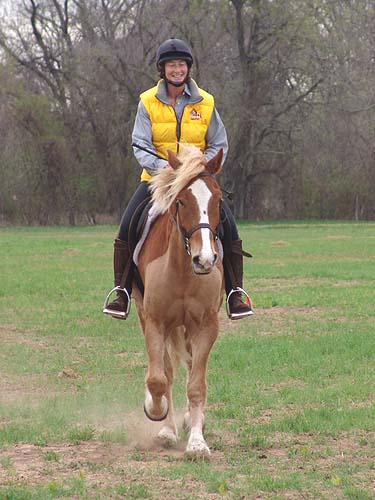

Back in a Boucher snaffle. I had him
in a full cheek for the dressage show, but I wanted to see how he did in
this bit.
Some trot warm up.
Mo's been out enough that he can get
off the trailer in a strange place and go straight to work.
We kept the jumps low to help him
figure out why he was there.
He was wiggly to the jumps, but honest
when he got to them.
He didn't think the x's were worth
a jumping effort.
He likes a soft ride.
Faced with a real jump he locked
on and took it nicely.
Moving on to some logs.
He cantered most of his fences.
At the trot, if they were small, he'd just take them with a bigger trot
stride.
A small combination meant he had to
think harder.
Cantering to another fence.
He wasn't intimidated by the
brush and didn't over jump it.
After cantering and jumping, he'd
calmly stand while Thuy went around.
A nice post and rail.
On to the rustic. There was some wiggle
up to this fence. It was across the field and he realized he was leaving
the group. Still, once they got there, he was honest about the fence.

Chrissie enjoyed her ride on Mo.
His trot was nice and forward and
relaxed after a bit of jumping.
We were supposed to be working on
the rider as much as the horse. Of course sometimes we'd get sloppy.
Then Meg would have us do it again
more neatly (notice no stirrup over this jump).
He was comfortable picking up a canter
whenever Chrissie asked.
Down the hill (he's had a lot of practice
for this out hunting).
Through the water.
Up the bank.
And down.
Heading out on the galloping path.
Letting him out. Chrissie said he
was very ratable. She could ask for more or less and he never tried to
take the bit from her.